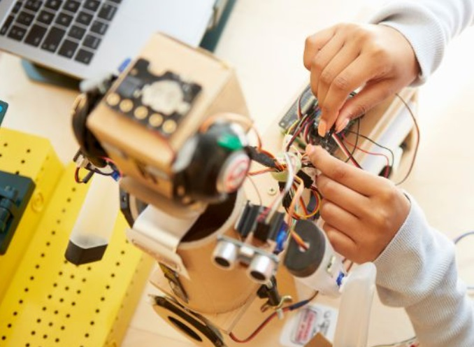

The Daily Happy
Las noticias más importantes del momento
Las noticias más importantes del momento

11 de mayo de 2026
Santo Domingo, República Dominicana.
El Colegio Happy Learning School continúa avanzando en la innovación tecnológica, demostrando que la robótica es una herramienta fundamental en su currículo integral. A través de proyectos prácticos, los estudiantes no solo están aprendiendo lenguajes de programación, sino que están desarrollando competencias esenciales para el siglo XXI.
Desde la institución se enfatiza una visión clara: "En nuestro colegio, la robótica no solo enseña a programar máquinas: forma mentes creativas, críticas y preparadas para el futuro". Esta metodología permite que los alumnos se enfrenten a retos de ingeniería y lógica desde temprana edad.
Con estas iniciativas, el Happy Learning School reafirma su compromiso de no solo seguir el ritmo de la evolución tecnológica, sino de posicionar a sus estudiantes como los futuros arquitectos e innovadores de la nación. Además, estas experiencias tecnológicas fomentan el trabajo en equipo, la resolución de problemas y la capacidad de innovación en cada estudiante.
Mediante el uso de herramientas de robótica educativa, los alumnos aprenden a transformar ideas en proyectos reales, fortaleciendo su confianza y despertando el interés por áreas como la ciencia, la tecnología, la ingeniería y las matemáticas.
← Volver al Inicio